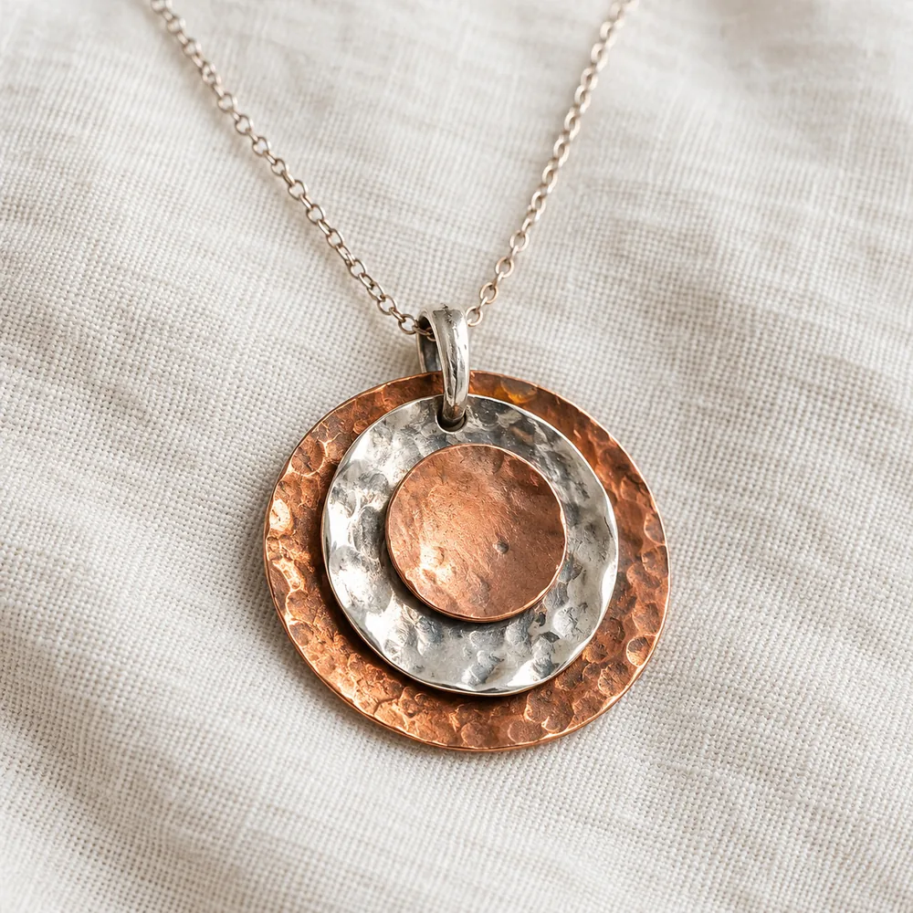
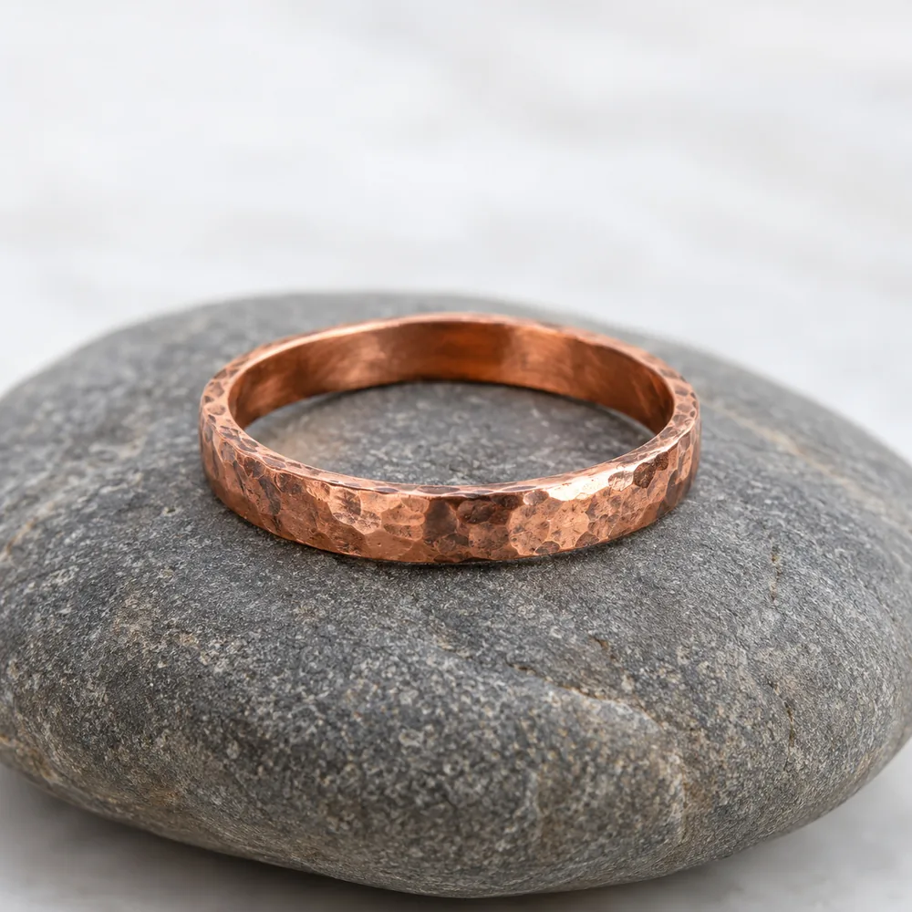

Artesanías con propósito
Joyas de cobre martillado, hechas a mano
Collares, aros, anillos y pulseras que llevan la marca de cada golpe de martillo. Elegí la tuya y comprala desde acá.
Colecciones
Elegí por pieza
Nuestro propósito
Joyas que llevan una intención
Cada golpe de martillo queda en el cobre. Por eso ninguna pieza sale igual a otra: lleva la marca de las manos que la hicieron.
Origen Rumi elabora joyas mayormente en cobre, y también en otros metales. Rumi quiere decir piedra en quechua: de la piedra sale el metal, y de nuestras manos, cada pieza. Queremos que lo que te pongas exprese quién sos, con una intención y con el valor de lo hecho a mano.
El sentido de cada forma
El camino que vuelve a empezar
Espiral
La espiral habla de los ciclos: avanzar sin perder el centro.
Ver las piezas
Lo que no se corta
Círculo
Un círculo no tiene principio ni fin: une, acompaña y abraza.
Ver las piezasLa raíz
Piedra
Rumi es piedra en quechua. La piedra recuerda de dónde venimos y nos da raíz.
Ver las piezasInformación
Para que tu pieza te acompañe mucho tiempo
Cómo cuidar el cobre, cómo saber tu talle y cómo seguimos después de tu compra.
Tu talle de anillo
Con un anillo que ya uses o con un hilo alrededor del dedo, te decimos el talle aproximado y te mostramos los anillos que lo tienen.
Apoyá un anillo que te quede bien y medilo por dentro, de borde a borde, con una regla.
Talle 14
Contorno 54 mm · diámetro 17,2 mm
Es una medida aproximada: si quedás entre dos talles, elegí el más grande.
Consultar mi talle por WhatsAppCuidados del cobre
- ¿Por qué cambia de color?
- El cobre reacciona con el aire y con la piel: con el uso se oscurece y toma pátina. Es parte de su encanto, no un defecto.
- ¿Cómo le devuelvo el brillo?
- Frotalo con medio limón y una pizca de sal, o con bicarbonato y unas gotas de agua. Enjuagá y secá bien.
- ¿Cómo lo guardo?
- Seco y separado de otras joyas, en una bolsita o una caja. Sacátelo para bañarte o para ir al mar o a la pileta.
- ¿Y si la piel se marca de verde?
- Es la reacción natural del cobre con la humedad: no hace daño y sale con agua y jabón.
Envíos y cambios
- Envíos
- Después de tu compra coordinamos el envío o la entrega por WhatsApp, con las opciones para tu zona.
- Cambios de talle
- ¿El anillo no te quedó? Escribinos y vemos juntos cómo resolverlo.
- Cómo comprar
- Sumás las piezas al carrito y finalizás la compra desde la web. Si preferís, antes podés consultarnos por WhatsApp.
Preguntas frecuentes
¿Las piezas son iguales a las de la foto?
Cada pieza se martilla a mano, así que la textura cambia apenas de una a otra. Esa diferencia es la marca de lo artesanal.
¿El cobre da alergia?
El cobre suele ser bien tolerado. Si tenés la piel sensible a algún metal, consultanos antes de elegir.
¿Cómo sé mi talle de anillo?
Usá la guía de talles: con un anillo que ya tengas o con un hilo alrededor del dedo, te damos el talle aproximado.
¿Puedo comprar varias piezas juntas?
Sí: sumalas al carrito y finalizá la compra de una sola vez.
Referencias
Lo que cuentan quienes ya llevan una pieza
Acá se publican las referencias de nuestras clientas y clientes, con su nombre y la pieza que eligieron.
¿Ya tenés una pieza de Origen Rumi? Contanos cómo te queda: tu referencia ayuda a quien está por elegir la suya.
Las primeras referencias llegan con las primeras piezas que viajen desde esta web.

Una pieza hecha a mano, para acompañar tu historia
Elegí la tuya en la tienda, o escribinos si querés consultar por una pieza antes de comprar.